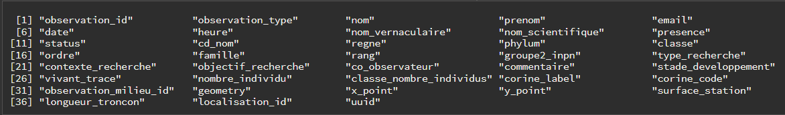
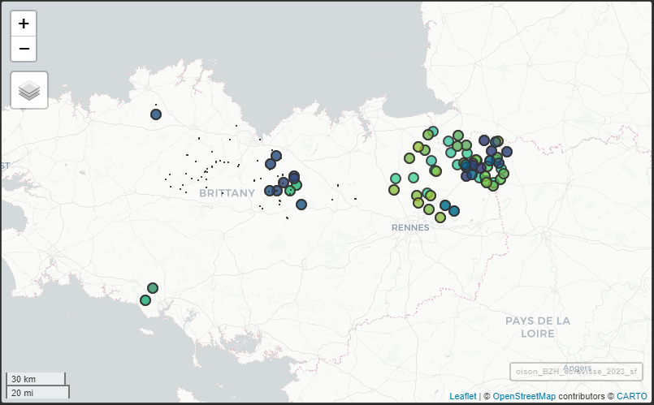
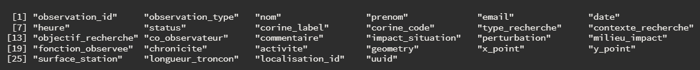
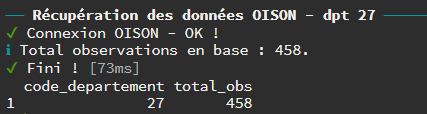
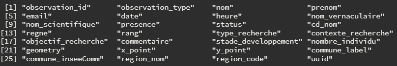
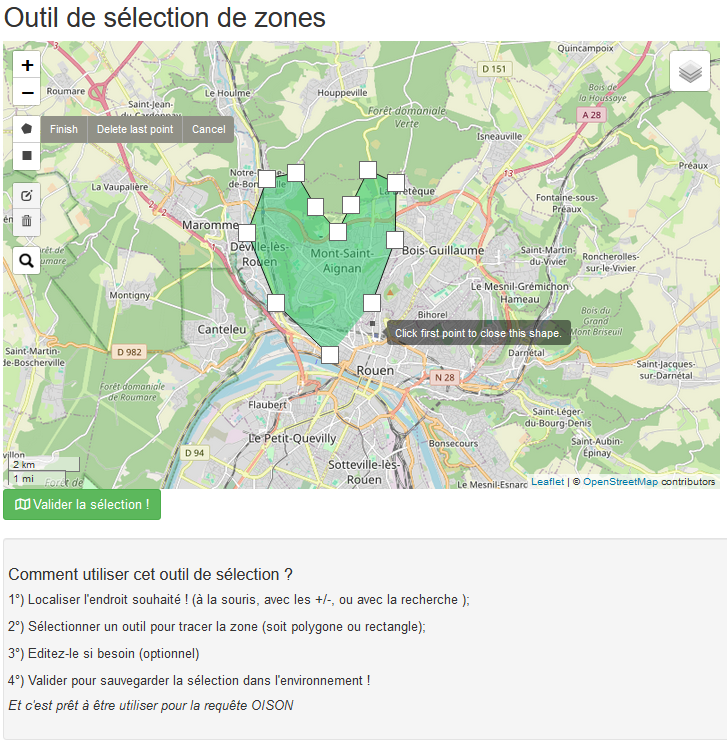
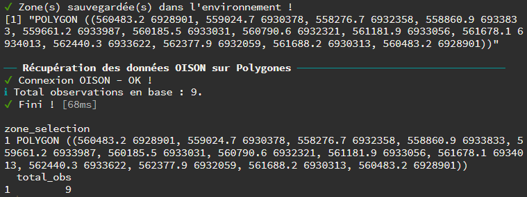

2. Comment utiliser le package oisonR ?
Source:vignettes/comment-utiliser-oisonR.Rmd
comment-utiliser-oisonR.RmdRécupérer les données via l’accès à la base SQL
Les observations taxons
Les observations taxons de OISON sont récupérables avec la
fonction get_table_taxon_sql(). Avant son utilisation, il
faut toutefois :
- s’assurer de disposer des paramètres de connexion à la base SQL
(cf. la vignette
oisonRpour plus de détails) ; - puis, initier la connexion à la base de données avec la fonction
start_sql_connexion().
La fonction permet de récupérer l’ensemble des observations de la
base, sauf si une géométrie est précisée en argument (argument
geometrie dans la fonction).
Après récupération des données, il est conseillé de stopper la
connexion à la base avec la fonction
stop_sql_connexion().
Exemple pour réaliser un export des observations taxons sur les écrevisses en Bretagne pour l’année 2023
1. Création d’une géométrie pour la Bretagne
Le package COGiter peut être utilisé pour récupérer la
géométrie correspondant à la région, et la convertir en chaîne de
caractères utilisables pour la requête spatiale.
geom_BZH <-
COGiter::regions_geo %>%
# filtre sur BZH
dplyr::filter(REG == 53) %>%
sf::st_as_sfc() %>%
# convert to text
sf::st_as_text()Le début de la géométrie prend la forme suivante : MULTIPOLYGON (((286722.7 6725074, 287611.2 6724914, 288375.7 6724036, 289794 6724164, 290204.4 67246…..
2. Récupération des données observations taxons
# a) connexion
bdd_oison <- start_sql_connexion()
# b) requete
oison_BZH <-
get_table_taxon_sql(conn = bdd_oison,
geometrie = geom_BZH)
# d) stop de la connexion
stop_sql_connexion(conn = bdd_oison)Le résultat de la requête est un objet de type
data.frame. Les noms de colonnes peuvent être obtenus de la
façon suivante :

⚠️ A noter qu’ici les champs de données peuvent être différents de ceux présents dans les exports de l’application OISON* (i.e *champs manquants). Une vue simplifiée et facilement utilisable a été priviligée !
3. Filtrage des données
Pour extraire les observations taxons correspondant aux
écrevisses datées de 2023, il suffit de réaliser un filtrage à partir
(i) de la colonne nom_vernaculaire et (ii) de la nouvelle
colonne annee (créée à partir de la colonne
date) :
4. Visualisation des données
Pour une réutilisation en analyse spatiale, la colonne
geometry doit être convertie au format sf
(simple features) avec la fonction st_as_sf() du
package sf.
Avec cet objet, les visualisations interactives sont possibles avec
le package mapview (à noter qu’il ne s’agit pas des
vraies données dans l’exemple ci-dessous… 🕶) :

5. Export des données
L’export sous différents formats est possible, dont le format
geopackage (.gpkg) pour une réutilisation sous
SIG.
💡 Le format
gpkgpermet de conserver les différents types de géométries pouvant se retrouver dans les observations OISON (points, polygones, lignes, …).
sf::write_sf(oison_BZH_ecrevisse_2023_sf,
"D:/oison_BZH_ecrevisse_2023.gpkg",
driver = "GPKG")Les observations milieu
Les observations milieu de OISON sont récupérables avec la
fonction get_table_milieu_sql(). Comme précédemment, il
faut disposer des paramètres de connexion à la base SQL (cf. la
vignette oisonR pour plus de détails).
Par défaut, la fonction permet de récupérer l’ensemble des
observations de la base, sauf si une géométrie est précisée en argument
(argument geometrie dans la fonction).
Exemple pour les observations milieu pour la région Bretagne
L’exemple ci-dessous correspond à une extraction des observations
milieu sur la zone géographique de la région Bretagne, en utilisant
l’objet précédemment créé (geom_BZH ; cf. ci-dessus) :
# a) connexion
bdd_oison <- start_sql_connexion()
# b) requete
oison_milieu_BZH <-
get_table_milieu_sql(conn = bdd_oison,
geometrie = geom_BZH)
# d) stop de la connexion
stop_sql_connexion(conn = bdd_oison)Le résultat de la requête est de nouveau un objet de type
data.frame. Les noms de colonnes peuvent être obtenus de la
façon suivante :

Récupérer les données via l’API
Trois fonctions permettent de récupérer les données via une “API”. Pour le moment, il n’est possible que de récupérer les observations taxons. Les fonctions sont les suivantes :
-
get_taxon_dpt()pour récupérer les observations taxons sur un département en spécifiant son code insee ; -
get_taxon_region()pour récupérer les observations taxons sur une région en spécifiant son code insee ; -
get_taxon_polygon()pour récupérer les observations taxons sur une zone géographique définie au préalable ou tracée à la volée avec une fonction dédiée.
Avec ces 3 fonctions, il est possible de collecter les données (avec
l’argument collect_all = TRUE) ou simplement consulter
rapidement le nombre de données sur l’étendue géographique (lorsque
l’argument collect_all = FALSE).
Une période de temps peut être également spécifiée avec les arguments
date_min et date_max.
La récupération des données est séquencée pour limiter la surcharge de l’API.
Exemples pour le département 27 avec
get_taxon_dpt()
Consultation simple sur l’année 2022 (avec
collect_all = FALSE)
get_taxon_dpt(
dpt_code = "27",
login = "john.doe@ofb.gouv.fr",
mdp = "mon_mdp",
date_min = '2022-01-01',
date_max = '2022-12-31',
collect_all = F)
Récupération des données sur l’année 2022 (avec
collect_all = TRUE)
oison_27_df <-
get_taxon_dpt(
dpt_code = "27",
login = "john.doe@ofb.gouv.fr",
mdp = "mon_mdp",
date_min = '2022-01-01',
date_max = '2022-12-31',
collect_all = T)Le résultat de la requête est de nouveau un objet de type
data.frame. Les noms de colonnes peuvent être obtenus de la
façon suivante :

Exemple avec la fonction get_taxon_polygon()
Cette fonction permet de consulter/récupérer (selon l’argument
collect_all = FALSE ou collect_all = TRUE) les
données sur une zone géographique définie par un polygone. Spécifier une
plage de date est également possible.
Le polygone peut :
- s’écrire manuellement sous cette forme ;
#> [1] "POLYGON ((410677.9 6877209, 413275.2 6929083, 496961.8 6925506, 495122.6 6873600, 410677.9 6877209))"- se tracer à la volée lorsque l’argument
draw_zone = TRUEest spécifié dans la fonction. Dès lors, un outil de sélection de zone s’ouvre (via une fenêtre interactiveshiny; cf. ci-dessous) permettant le traçage du polygone et son stockage dans l’environnement de travail pour la requête.
get_taxon_polygon(
login = "john.doe@ofb.gouv.fr",
mdp = "mon_mdp",
draw_zone = T,
collect_all = F)
